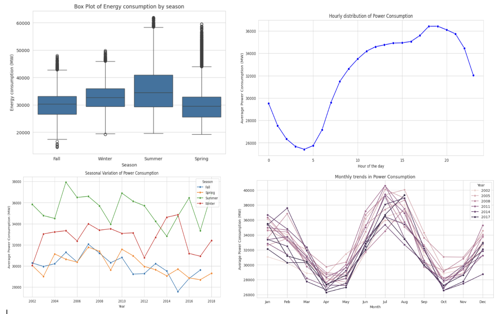
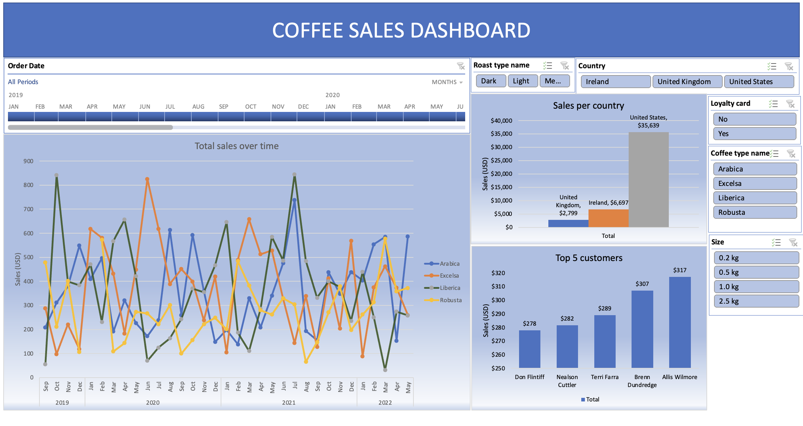
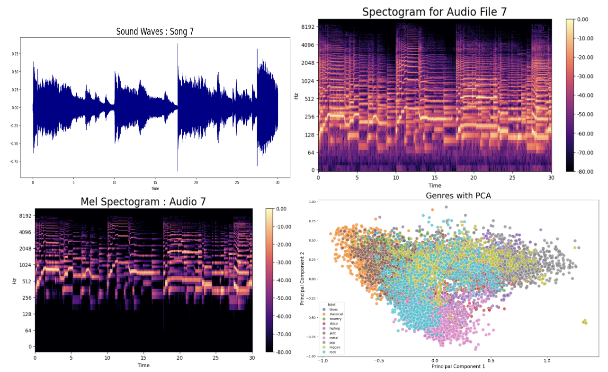

Data Engineer with 5+ years of experience building enterprise-scale data platforms across healthcare and insurance domains using Snowflake, Databricks, AWS, Azure, PySpark and dbt. Skilled in building scalable ETL/ELT pipelines that process multi-million-record healthcare and insurance datasets while improving performance, reducing costs, and ensuring HIPAA compliance. Experienced in modern data warehousing, Lakehouse architecture, and cloud migration.
Amazon Web Services
Amazon Web Services

High-level exploratory data analysis and multiple time series models to forecast future energy consumption.
A command-line, menu-driven Hospital Database Management System built with MySQL and Python, developed through an iterative requirements → design → implementation → test process.

A comprehensive Excel dashboard analyzing coffee sales performance across regions and products, with total sales, growth trends, and top-5 customers.

Feature extraction and classification to group songs by genre and recommend similar songs, enhancing user experience and artist discovery.
Northeastern University, Boston, MA